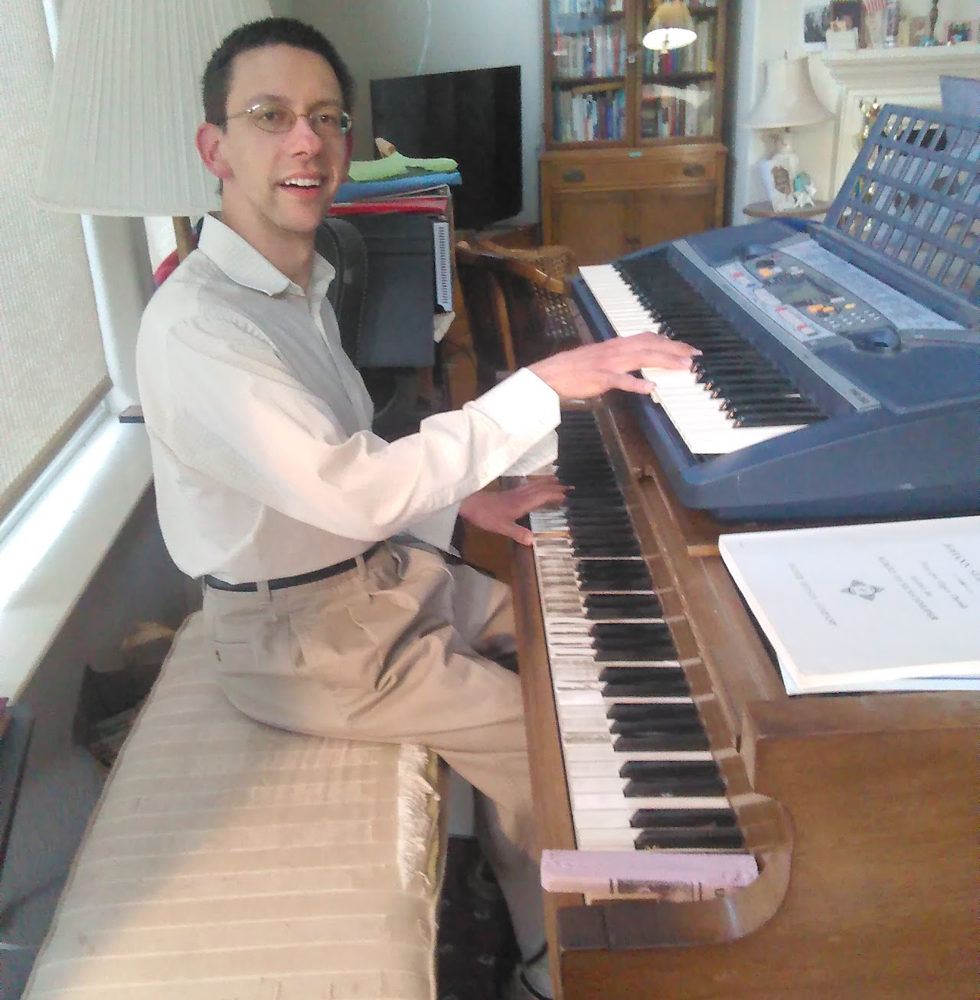

Musical compositions
The tonal language is too precise to be translated into words. ~ Felix Mendelssohn

I compose and improvise music in classical styles and in pedal-matrix harmony.
In addition to the pieces featured on this page, be sure to check out my recordings on Spotify and YouTube Music.
Piano music
Meditation on the Holy Sacrament (based on the Gregorian hymn Pange lingua): listen watch
Sonata in C after Haydn: listen
Sonata in E minor after Haydn: listen
Mrilâžðakh (Temptation): watch
Organ music
Film music
I furnished the music for a short film for potential applicants to the Churchill Scholarship, the scholarship that funded my 1-year postbaccalaureate study at the University of Cambridge in 2015–16.
Renaissance canons
Among musical forms, the canon (two or more voices singing or playing the same tune, but offset in time, and often in pitch as well) is one of the most mathematical in the sense that there is an added demand, above and beyond the limits of the style in question, that can make the working out of a piece a real challenge. I write at length about the more difficult kinds of canon in a recent paper in the Journal of Mathematics and Music. Here are some examples with MIDI recordings.
As an aid to hearing the separate voices, these recordings have been made in stereo sound best played through a pair of speakers or earbuds, rather than a single phone or laptop speaker.
Benedictus (3-in-1 asymmetric): score listen
Salve Regina (4-in-1 inverting): score listen
O Magnum Mysterium (8-in-4, quadruple canon for double chorus) score listen
Additional vocal and choral music
Memorare (original chant): score listen
Ave Verum (for mixed chorus, in Romantic style): score listen
Personent hodie (harmonization of an anonymous Christmas carol, in Renaissance style): score
Domine non sum dignus (for mixed chorus, in Renaissance style): score
Hymn (part of the Harvard 2015 celebration "Battle Hymns"): listen
Missa Contemplationis:
Missa «Ego Sum Panis Vivus», in Renaissance style based on Palestrina's motet of the same name:
Premiere at Most Precious Blood of Jesus Parish, Easter 2025:
… and a ditty my mother wrote to help memorize the Greek alphabet: score listen
The musical compositions on this page are licensed under a Creative Commons Attribution 4.0 International License.